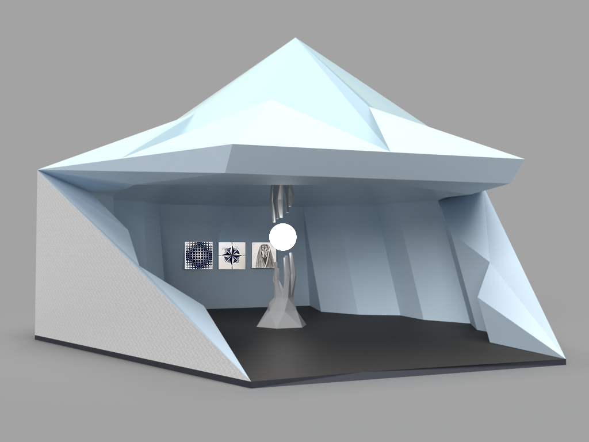
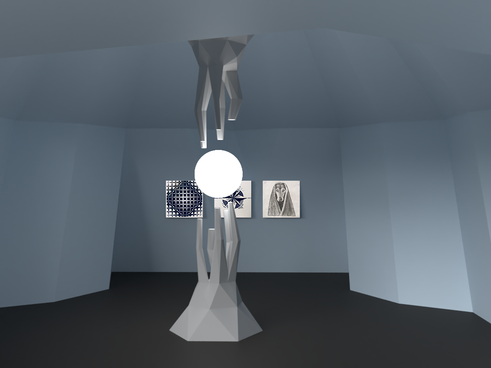
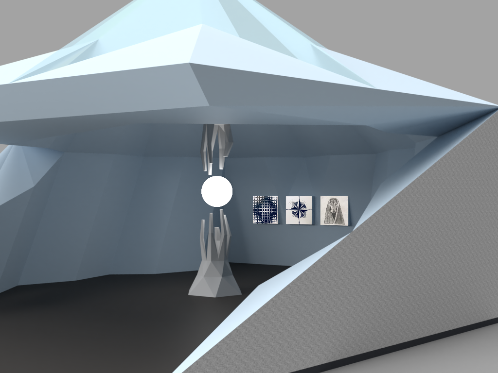
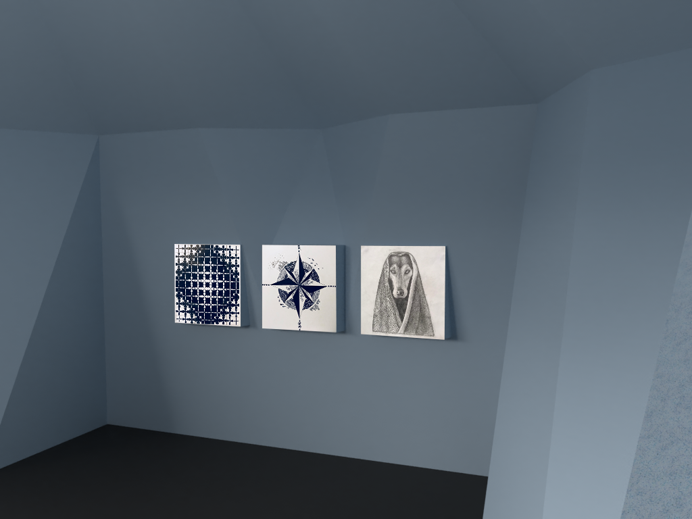
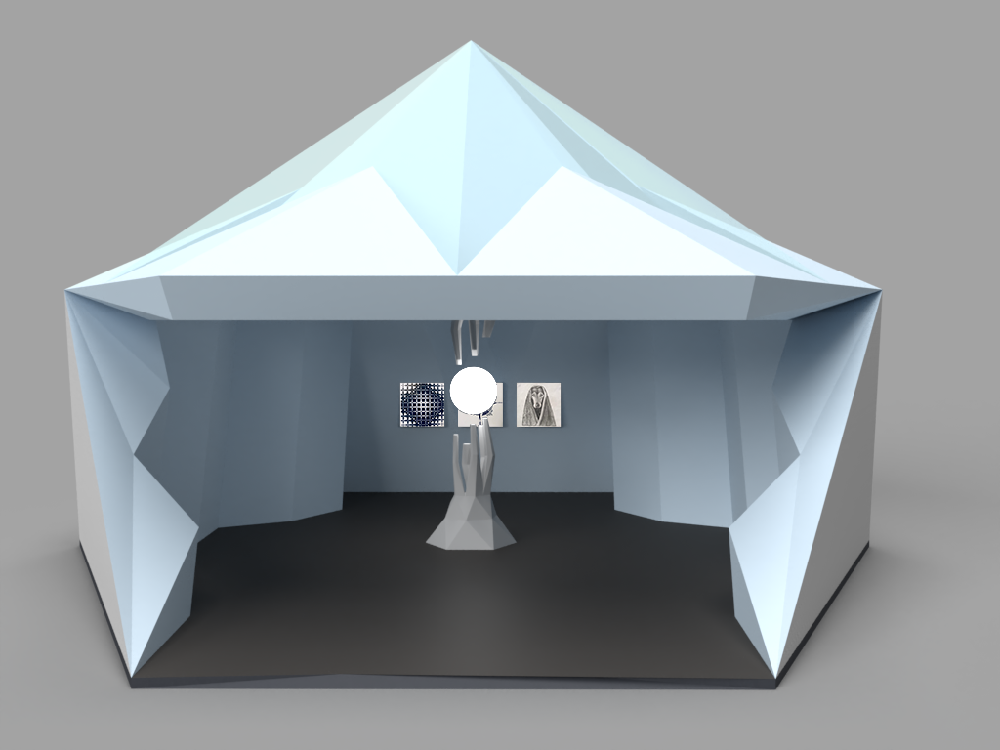
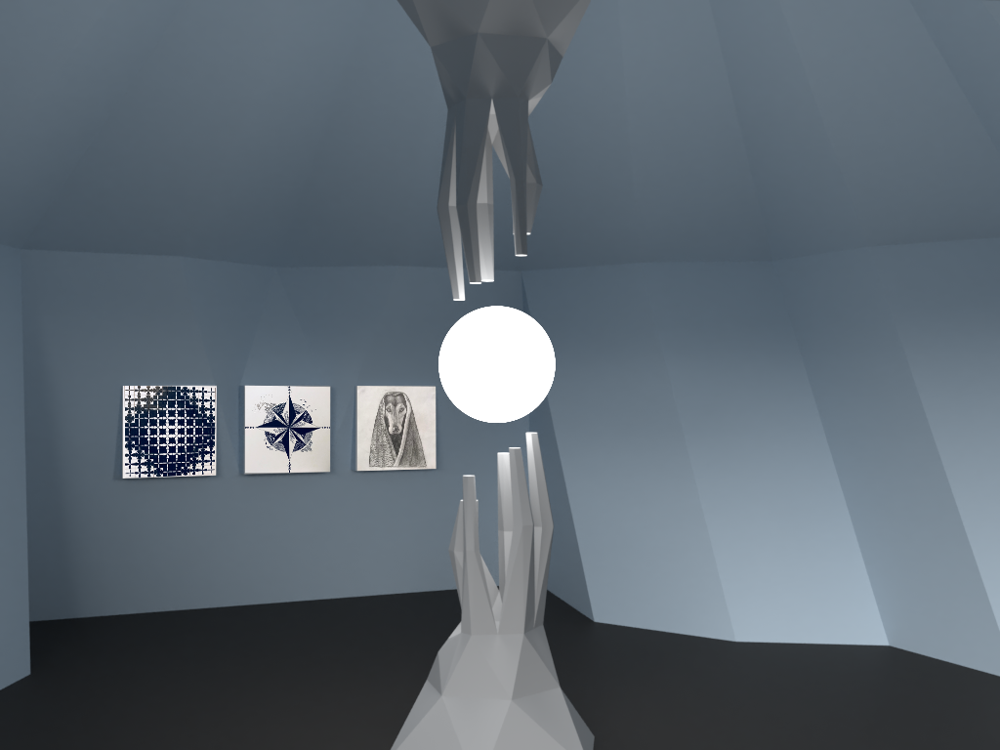

Chengyuan Shi 






Virtual Reality Art, Digital Image, 2020
This gallery contains 3D work and 2D works. In this gallery, my works include directions as the theme. Even for the architectural design of the gallery, I designed it in the shape of a minaret. The lines on the roof all point to the apex. In my first 3D work, a pair of hands tried to touch the light ball in the middle. The light ball represented the goal. The two hands represented the efforts to move towards the goal. On the left side of the wall is a 2D work of mine. It is a work composed of 100 Pattons. It is a state of outward expansion. This work abstractly expresses the state of the emotion. In the middle of the wall is a compass. The compass points in four directions: east, south, west, and north. On the compass, I depict nature. I want to express through this work that art originates from nature. On the far right of the wall is a sketch portrait of a dog. And the direction of this work is forward.